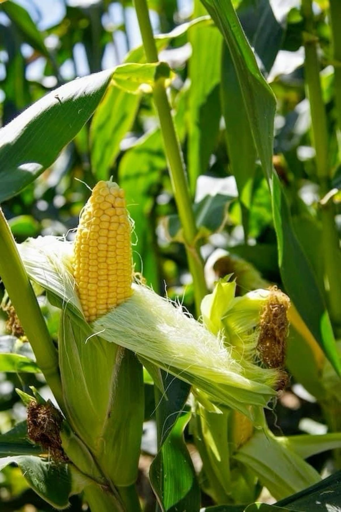
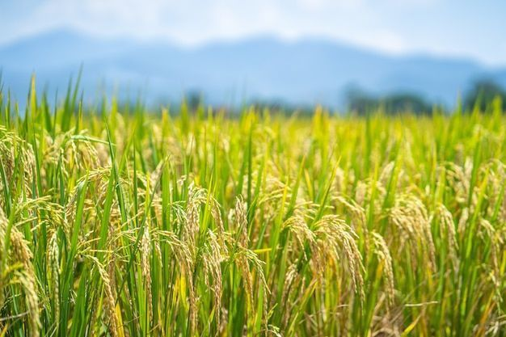
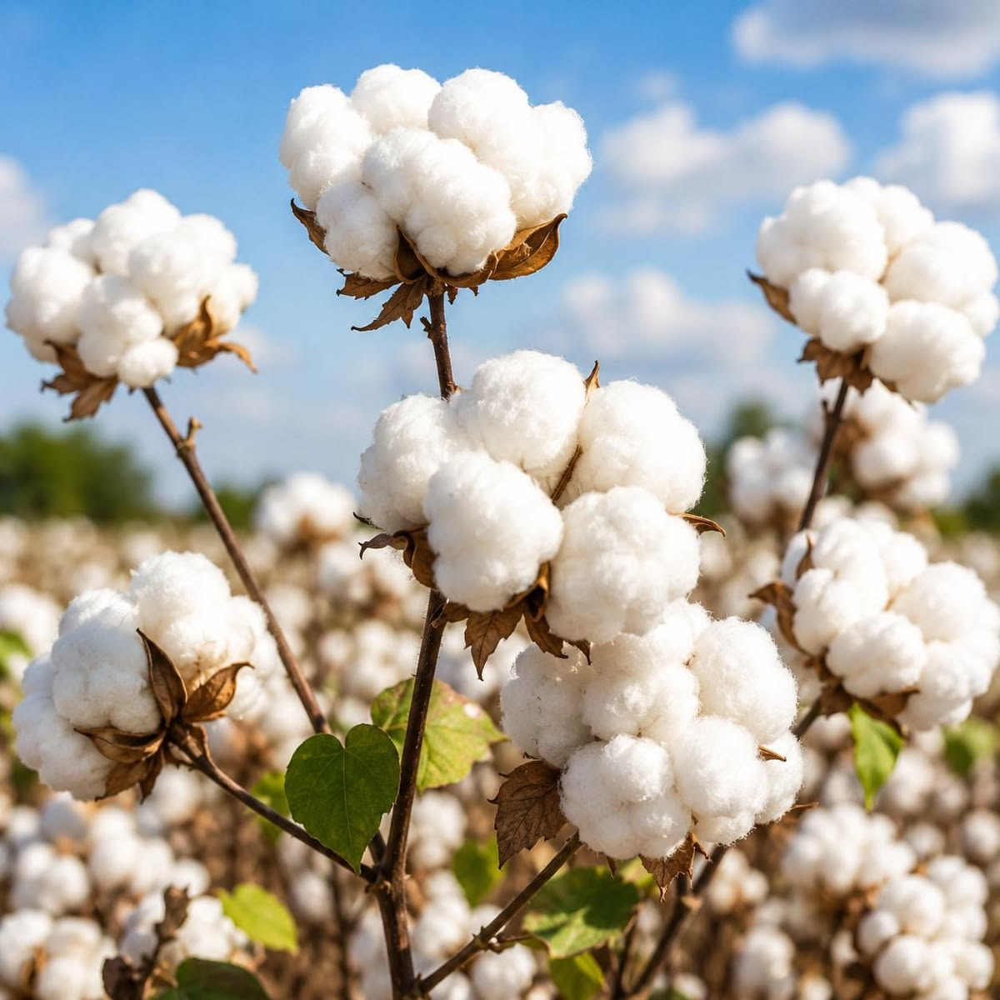
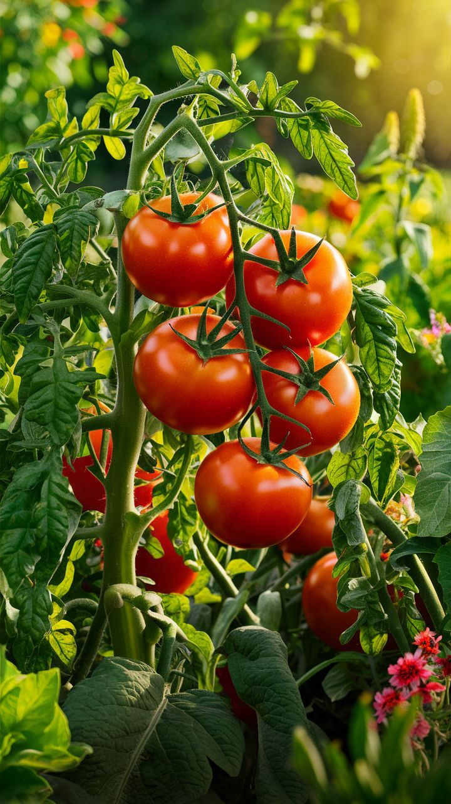

POUR LES AGRICULTEURS
Une technologie pensée pour nos réalités
AgroTech Faso ne cherche pas à rendre l'agriculture plus compliquée. Au contraire, notre objectif est de rendre la technologie utile, compréhensible et accessible aux producteurs.
Mieux gérer l'eau
Des informations simples
Une agriculture durable
CULTURES ET USAGES
Des applications adaptées aux différents besoins agricoles

Maïs
Riz Le marché paysan
Le marché paysan

Coton
Cultures légumières durables